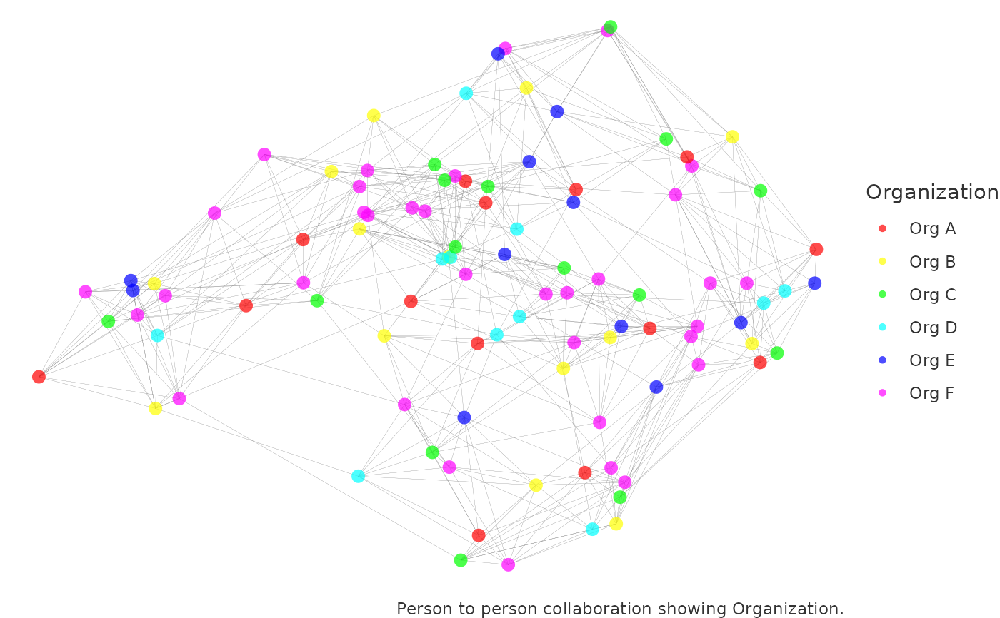
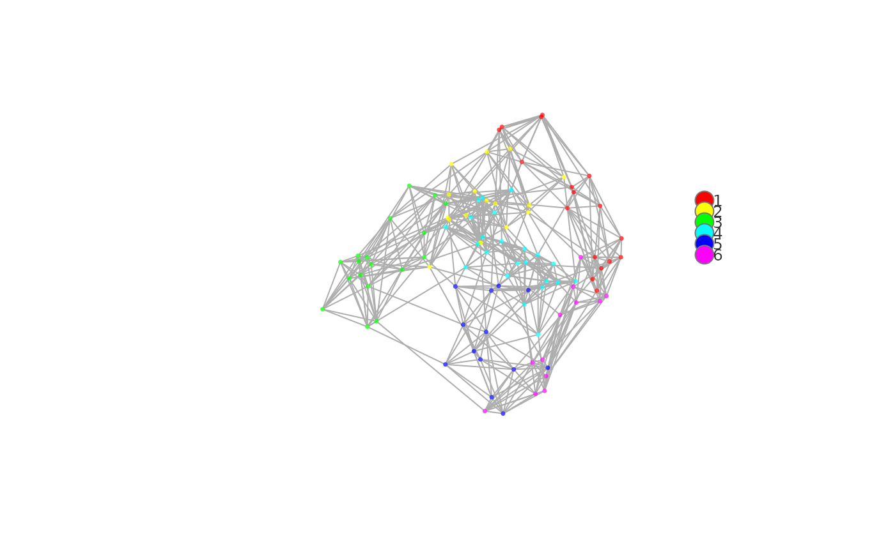
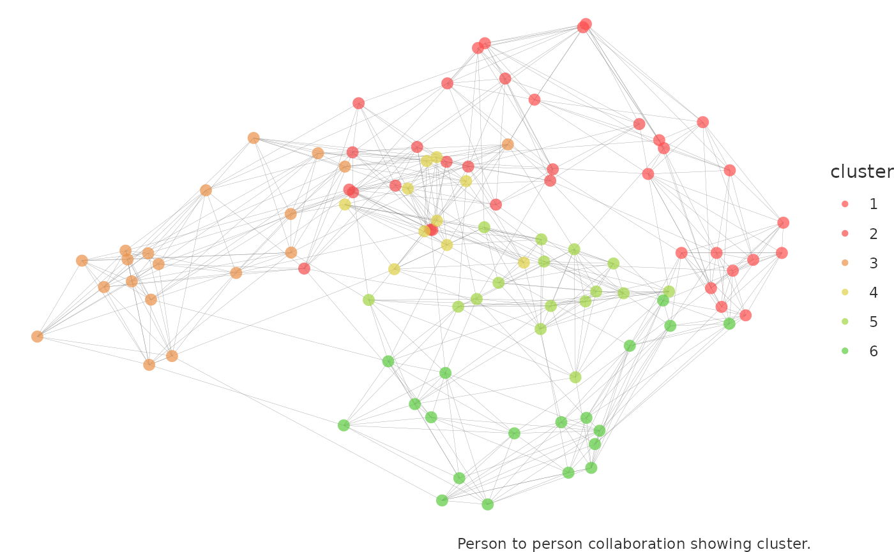
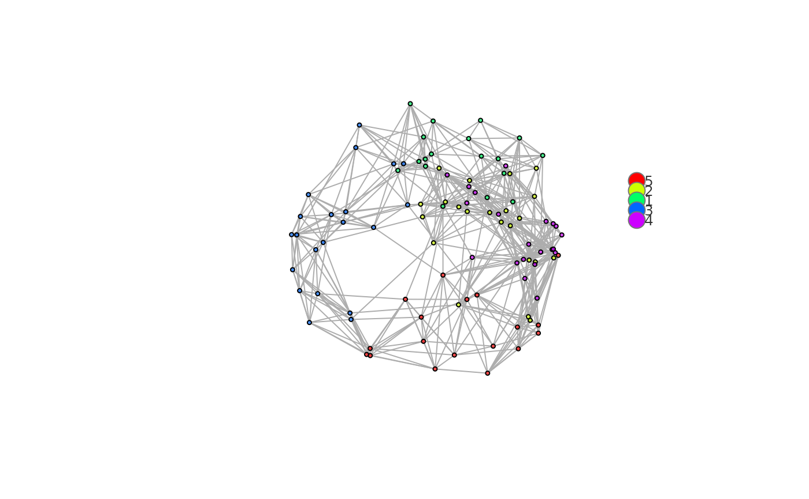

![[Experimental]](figures/lifecycle-experimental.svg)
Analyse a person-to-person (P2P) network query, with multiple visualisation and analysis output options. Pass a data frame containing a person-to-person query and return a network visualization. Options are available for community detection using either the Louvain or the Leiden algorithms.
network_p2p(
data,
hrvar = "Organization",
return = "plot",
centrality = NULL,
community = NULL,
weight = NULL,
comm_args = NULL,
layout = "mds",
path = paste("p2p", NULL, sep = "_"),
style = "igraph",
bg_fill = "#FFFFFF",
font_col = "grey20",
legend_pos = "right",
palette = "rainbow",
node_alpha = 0.7,
edge_alpha = 1,
edge_col = "#777777",
node_sizes = c(1, 20),
seed = 1
)Arguments
- data
Data frame containing a person-to-person query.
- hrvar
String containing the label for the HR attribute.
- return
A different output is returned depending on the value passed to the
returnargument:'plot'(default)'plot-pdf''sankey''table''data''network'
- centrality
string to determines which centrality measure is used to scale the size of the nodes. All centrality measures are automatically calculated when it is set to one of the below values, and reflected in the
'network'and'data'outputs. Measures include:betweennessclosenessdegreeeigenvectorpagerank
When
centralityis set to NULL, no centrality is calculated in the outputs and all the nodes would have the same size.- community
String determining which community detection algorithms to apply. Valid values include:
NULL(default): compute analysis or visuals without computing communities."louvain""leiden""edge_betweenness""fast_greedy""fluid_communities""infomap""label_prop""leading_eigen""optimal""spinglass""walk_trap"
These values map to the community detection algorithms offered by
igraph. For instance,"leiden"is based onigraph::cluster_leiden(). Please see the bottom of https://igraph.org/r/html/1.3.0/cluster_leiden.html on all applications and parameters of these algorithms. .- weight
String to specify which column to use as weights for the network. To create a graph without weights, supply
NULLto this argument.- comm_args
list containing the arguments to be passed through to igraph's clustering algorithms. Arguments must be named. See examples section on how to supply arguments in a named list.
- layout
String to specify the node placement algorithm to be used. Defaults to
"mds"for the deterministic multi-dimensional scaling of nodes. See https://rdrr.io/cran/ggraph/man/layout_tbl_graph_igraph.html for a full list of options.- path
File path for saving the PDF output. Defaults to a timestamped path based on current parameters.
- style
String to specify which plotting style to use for the network plot. Valid values include:
"igraph""ggraph"
- bg_fill
String to specify background fill colour.
- font_col
String to specify font colour.
- legend_pos
String to specify position of legend. Defaults to
"right". Seeggplot2::theme(). This is applicable for both the 'ggraph' and the fast plotting method. Valid inputs include:"bottom""top""left"-"right"
- palette
String specifying the function to generate a colour palette with a single argument
n. Uses"rainbow"by default.- node_alpha
A numeric value between 0 and 1 to specify the transparency of the nodes. Defaults to 0.7.
- edge_alpha
A numeric value between 0 and 1 to specify the transparency of the edges (only for 'ggraph' mode). Defaults to 1.
- edge_col
String to specify edge link colour.
- node_sizes
Numeric vector of length two to specify the range of node sizes to rescale to, when
centralityis set to a non-null value.- seed
Seed for the random number generator passed to either
set.seed()when the louvain or leiden community detection algorithm is used, to ensure consistency. Only applicable whencommunityis set to one of the valid non-null values.
Value
A different output is returned depending on the value passed to the return
argument:
'plot': return a network plot, interactively within R.'plot-pdf': save a network plot as PDF. This option is recommended when the graph is large, which make take a long time to run ifreturn = 'plot'is selected. Use this together withpathto control the save location.'sankey': return a sankey plot combining communities and HR attribute. This is only valid if a community detection method is selected atcommunity.'table': return a vertex summary table with counts in communities and HR attribute. Whencentralityis non-NULL, the average centrality values are calculated per group.'data': return a vertex data file that matches vertices with communities and HR attributes.'network': return 'igraph' object.
See also
Other Network:
external_network_plot(),
g2g_data,
internal_network_plot(),
network_describe(),
network_g2g(),
network_summary(),
p2p_data_sim()
Examples
p2p_df <- p2p_data_sim(dim = 1, size = 100)
# default - ggraph visual
network_p2p(data = p2p_df, style = "ggraph")

# return vertex table
network_p2p(data = p2p_df, return = "table")
#> # A tibble: 6 × 2
#> Organization n
#> <chr> <int>
#> 1 Org A 14
#> 2 Org B 14
#> 3 Org C 15
#> 4 Org D 11
#> 5 Org E 12
#> 6 Org F 34
# return vertex table with community detection
network_p2p(data = p2p_df, community = "leiden", return = "table")
#> # A tibble: 100 × 3
#> Organization cluster n
#> <chr> <chr> <int>
#> 1 Org A 13 1
#> 2 Org A 19 1
#> 3 Org A 26 1
#> 4 Org A 33 1
#> 5 Org A 38 1
#> 6 Org A 50 1
#> 7 Org A 57 1
#> 8 Org A 68 1
#> 9 Org A 7 1
#> 10 Org A 74 1
#> # ℹ 90 more rows
# leiden - igraph style with custom resolution parameters
network_p2p(data = p2p_df, community = "leiden", comm_args = list("resolution" = 0.1))

# louvain - ggraph style, using custom palette
network_p2p(
data = p2p_df,
style = "ggraph",
community = "louvain",
palette = "heat_colors"
)

# leiden - return a sankey visual with custom resolution parameters
network_p2p(
data = p2p_df,
community = "leiden",
return = "sankey",
comm_args = list("resolution" = 0.1)
)
# using `fluid_communities` algorithm with custom parameters
network_p2p(
data = p2p_df,
community = "fluid_communities",
comm_args = list("no.of.communities" = 5)
)

# Calculate centrality measures and leiden communities, return at node level
network_p2p(
data = p2p_df,
centrality = "betweenness",
community = "leiden",
return = "data"
) %>%
dplyr::glimpse()
#> Rows: 100
#> Columns: 8
#> $ name <chr> "SIM_ID_1", "SIM_ID_2", "SIM_ID_3", "SIM_ID_4", "SIM_ID_5…
#> $ Organization <chr> "Org F", "Org F", "Org E", "Org D", "Org C", "Org B", "Or…
#> $ cluster <chr> "1", "2", "3", "4", "5", "6", "7", "8", "9", "10", "11", …
#> $ betweenness <dbl> 41.05141, 60.46251, 94.68326, 93.96434, 50.05858, 35.2563…
#> $ closeness <dbl> 0.3680297, 0.3735849, 0.3867188, 0.3882353, 0.3639706, 0.…
#> $ degree <dbl> 9, 10, 9, 10, 7, 10, 9, 9, 10, 11, 9, 10, 11, 10, 9, 10, …
#> $ eigenvector <dbl> 0.5720120, 0.6119880, 0.6147041, 0.6136153, 0.4656194, 0.…
#> $ pagerank <dbl> 0.009252607, 0.010176502, 0.009209944, 0.010143145, 0.007…